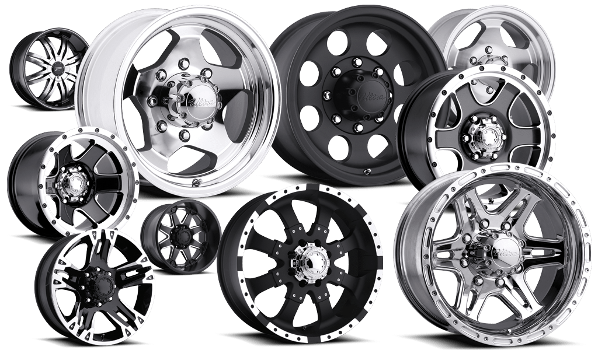
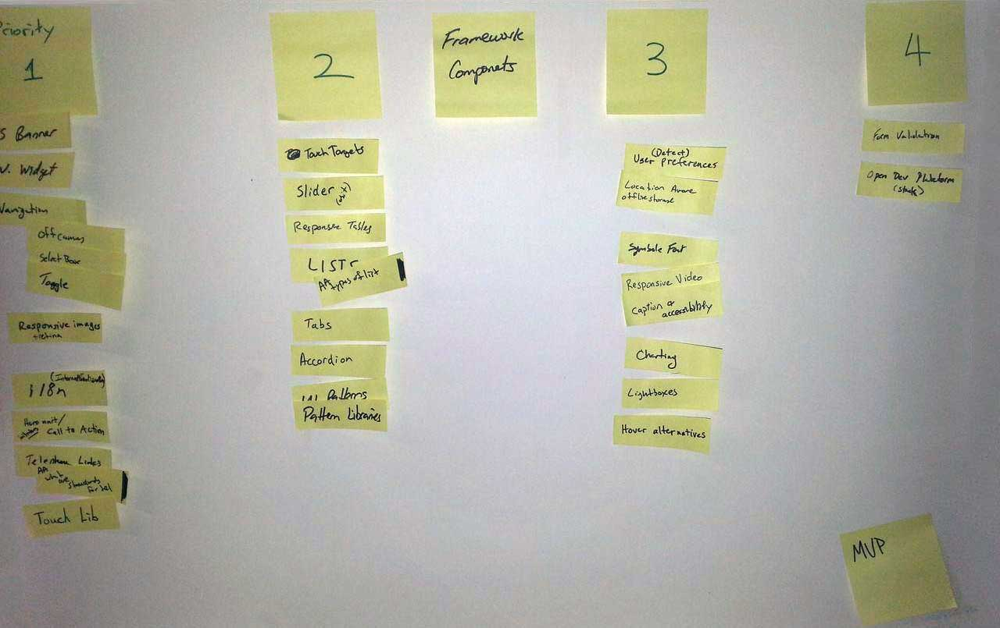
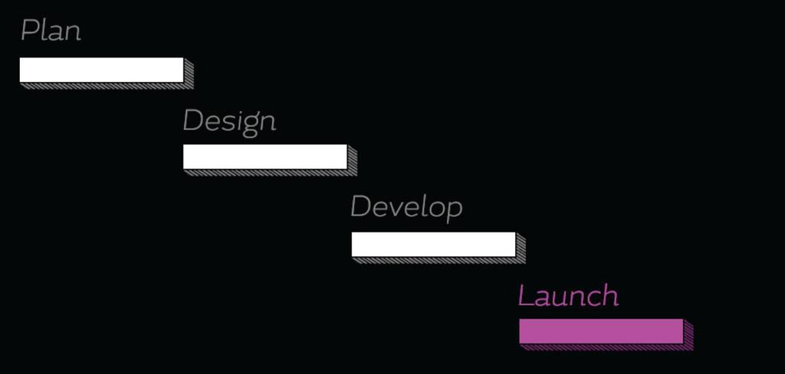
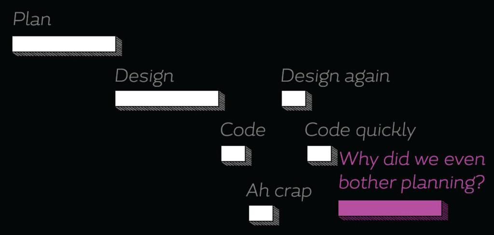
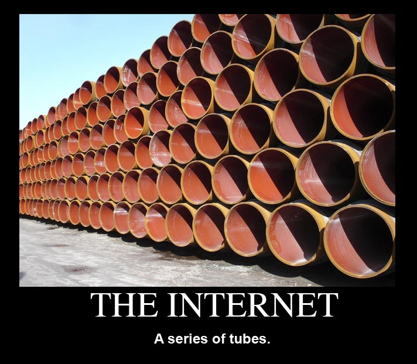
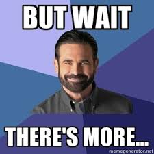
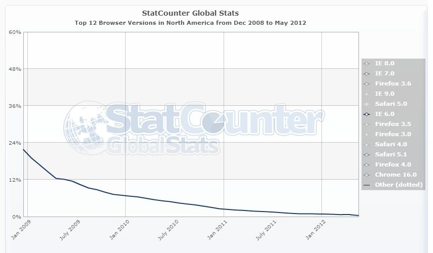
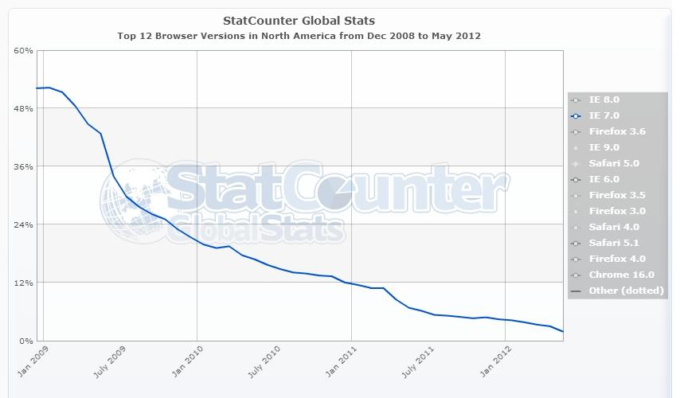
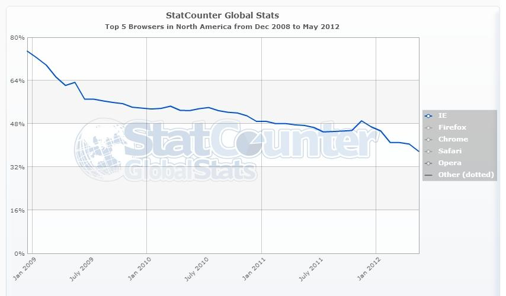
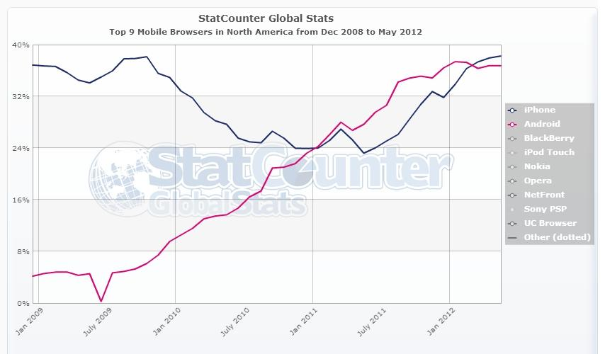

Title of Presentation
Craig Patik
Eric Steinborn
Typical development
Typically, when a company or organization, is faced with a development challenge, they end up reinventing the wheel each time.
Typical development

Typically, when a company or organization, is faced with a development challenge, they end up reinventing the wheel each time.
Lacks Collaboration
This lack of collaboration is terribly inefficient (time AND money)
ITS helped us collaborate
Put a bunch of smart people in a room to work this out.
With ITS, NYS is positioned to avoid that by collaborating our efforts into one project(?).
How to avoid reinventing the wheel?
Great question!
What is great about the web right now?
What will be great in the future?
Web development has advanced dramatically in the last few years.
How can we harness that?
Create future friendly websites
What device will you be unwrapping tomorrow?
What about 2 holidays from now?
IN A PERFECT WORLD...

We weren't burdoned with limitations, the sky was the limit!
Pixel Perfect Photoshop Comps
Typically you would design in Photoshop, and mock up all kinds of layouts.
Pixel Perfect Photoshop Comps
RWD isn’t pixel perfect, you'd theoretically have to design a separate comp for every single device
Typical Waterfall Approach

Photo Credit: Dan Mall
TYPICAL WATERFALL APPROACH
“No battle plan survives contact with the enemy.”
- Colin Powell
TYPICAL WATERFALL APPROACH

Photo Credit: Dan Mall
This is typically how development ends up happening
pROPOSED sCHEDULE
ACTUAL SCHEDULE
the web Is a series of Tubes Components
Lets create some reusable components
But wait... Let's not reinvent the wheel again.

IS there anybody Out There?
Has anyone already done this before. We actually found a few...
Foundation 4
Foundation 4
Mobile First
Semantic Markup
Library of JS Plugins
“The most advanced responsive
- Zurb (creators of Foundation)
Tabs to Accordion
(pic of animated gif)
Large Screens:
Small Screens:
Link to Demo
So we Started making stuff
Responsive Media Content
(block to stack animated gif)
RESPONSIVE TABLES
(Animated GIF)
GATHERED EVERYthing IN ONE PLACE
Featuring:
Introductory videos
All RWD resources we found
A showcase of components and techniques
and we called it...
“Thats all sounds terrific, but can you please explain how I could possibly use these super amazing, technologically advanced components on MY sites and apps?”
We didn't create it from scratch
It's actually based on a new web framework.
The New Web Framework
Is Responsive
Is Modern
Is Whimsically Magically Magnificent
It's built for NYS
(NYS collage pic)
But what would we call such a thing?
Excelsior is
A Fully Documented,
platform, server and CMS agnostic,
cutting-edge, Open-Source web framework
Excelsior Features
Reusable and Re-Skinnable components and patterns
An easy entry point for beginners
Guts tough enough for advanced developers
It's Not another standard
Excelsior is yours
Use it how you want
Edit it until the cows come home.
hosted exclusively on Github
But wait, There's More!

Outdated techniques and concepts
"Just throw it on the website"
Desktop-First design, Separate mobile sites
Plain CSS/ Manual file creation
50 stylesheets and JS files per page
Mismanaged source control
Emails and spreadsheets for bugs and changes
Excelsior does away with outdated techniques and design concepts.
OUTDATED TECHNIQUES AND CONCEPTS
YOU SHALL NOT PASS!
a modern web development process
...and made it easy to use too!
We threw out the old processes and design concepts and implemented a modern web development process and made it easy for you to use, too.
Multi-Device & Mobile-First
Preprocessed CSS and Build tasks
Minified and Combined Assets
next gen Browsers and Devices
Fully functional in IE8+ and all major browser vendors
Chrome, Firefox, Opera, Safari
iPhone, Android 2+, WinPhone 7+
non-major browsers still "work"
IE6 & IE7 will be served mobile layout or print styles
"My sites MUST look identical across all browsers and fully support IE6 AND IE7!"
We've got three things to say about that:
Do you REALLY?
Do you REALLY need to support them? Double check your analytics: IE6-7 usage is down dramatically over the last few years.
IE 6 is Dead

IE 6 = 0.4%
IE7 isn't far behind

IE 7 = 1.92%
IE7 is closely approaching that
look Close, You'll see something

IE Usage 2008-2013
I'm less concerned with a steadily declining IE usage statistic
Mobile is Winning

Mobile Usage 2008-2013
mobile devices far outpace legacy browsers, and are set to over-take them in 2015.
Shun the Future for the past?
Still need to support it?
The code isn't set in stone
You can add your own support
we understand mandates, we're not fans of them either.
you're going to love it, Here's Why
It's So easy
All you need to know is HTML & CSS
Fully documented components
In-depth Wiki
RWD is Hard
It takes a lot of time
It's fundamentally different
RWD is a moving target
Don't reinvent the wheel again
We've done the heavy lifting for you
1. It involves lots of research and development
2.You have to learn lots of fundamentally different web design concepts to do it right
3. RWD is changing at such a rapid pace, as little as a year ago we were dropping our sidebars below our content and calling it responsive. It’s so much more advanced than that now.
4. Do you really want to spend another year researching another approach to RWD, only to find out that you are a year behind? Or do you want to just get started with RWD today?
You can use it immediately
Download the Zip, and start developing your sites.
What does Open-source mean?
hosted on
we’re not gonna get into how to use GitHub here, there will be a more in-depth presentation on it in June.
Have something to add?
Adding support for legacy browsers?
Some cool new feature that works great?
You can contribute, share your work with the world!
You will receive a pre-determined amount of high-fives and patted-backs based on its level of awesomeness.
Houston we have a problem.
Find a bug?
The best around
Many talented devs across NYS
Let's make this the best RWD framework
Excelsior's Mission
Continuously research and implement RWD best practices with the help of NYS employees to maintain the best Responsive Web Design Framework possible.